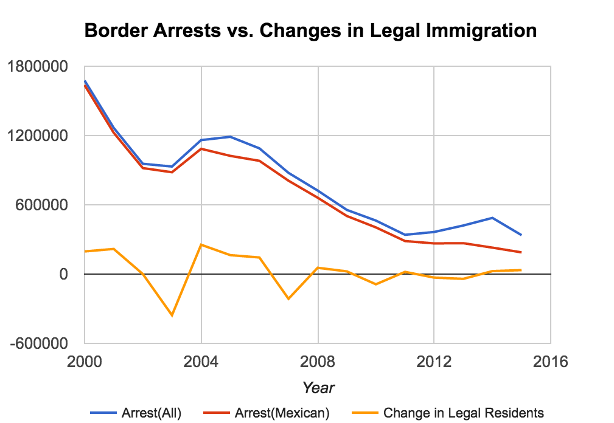

Over the last two weeks, we focused on addressing some of the final research questions we specified in our previous blog post, which led us to get a few additional datasets and apply statistical methods in the aim of gaining new insights. Overall, we are satisfied with our progress as we approach the final two weeks of the project and look forward to completing the final deliverables (an additional visualization and another ML/statistical analysis) by our presentation at the end of the semester.
We wrote code to determine the correlation value between crime rate in the US as a whole versus immigration percentage from year 1990 to 2015. The result was 0.568, which is a moderate positive correlation. While this is a significant correlation, it is important to investigate if there are other underlying causes, since correlation doesn't imply causation. As such, we plan on looking into this dataset more, and seeing if our correlation is well founded, or if there are some other underlying factors causing the crime rate to correlate with the percent population of immigrants.
Additionally, we plan on looking at the individual correlations on a state by state basis. This will make for an interesting visualization, as well as provide more insight into the complex issue of the intersection of immigration and crime. Further, it will be important to look at the nature of the crimes. A positive correlation could indicate that immigrants are committing crimes, or the crime rate could be increasing due to other factors (such as crimes against immigrants).
The code we wrote to calculate the correlation can be viewed below:
import sys
import csv
sys.argv[0]
x = []
y = []
with open(sys.argv[1],'rU') as infile:
reader = csv.reader(infile, dialect=csv.excel_tab)
next(reader)
line = next(reader)
for row in reader:
data = row[0].split(',')
x.append(float(data[3]))
y.append(float(data[4])/float(data[2]))
xbar = 0.0
ybar = 0.0
for i in range(len(x)):
xbar += x[i]
ybar += y[i]
xbar = xbar/len(x)
ybar = ybar/len(y)
cov = 0.0
std_x = 0.0
std_y = 0.0
for i in range(len(x)):
cov += (x[i] - xbar)*(y[i] - ybar)
std_x += (x[i] - xbar)**2
std_y += (y[i] - ybar)**2
std_x = std_x ** .5
std_y = std_y ** .5
r = cov/(std_x * std_y)
print("The sample correlation for this dataset is %f" % r)
To examine the breakdown between legal and illegal immigration as suggested in the last blog post, we superimposed the datasets "Illegal Immigrants Arrested by US Border Patrol" and "Change in Number of Immigrants". We obtained a correlation (between illegal immigrants arrested and change in number of immigrants) of 0.441, so if our data is considered an accurate analog of the research question, we find that there is a moderate correlation between levels of legal and illegal immigration. We also produced the following graph for visualization purposes:
On our last blog post, we mentioned the possibility of investigating the refugee immigration program with respect to how well refugees do in comparison to non-refugee status immigrants. However, after doing further research into this topic, we determined that the literature is already quite conclusive on this matter, to the extent that our investigating this topic would simply reproduce existing research.